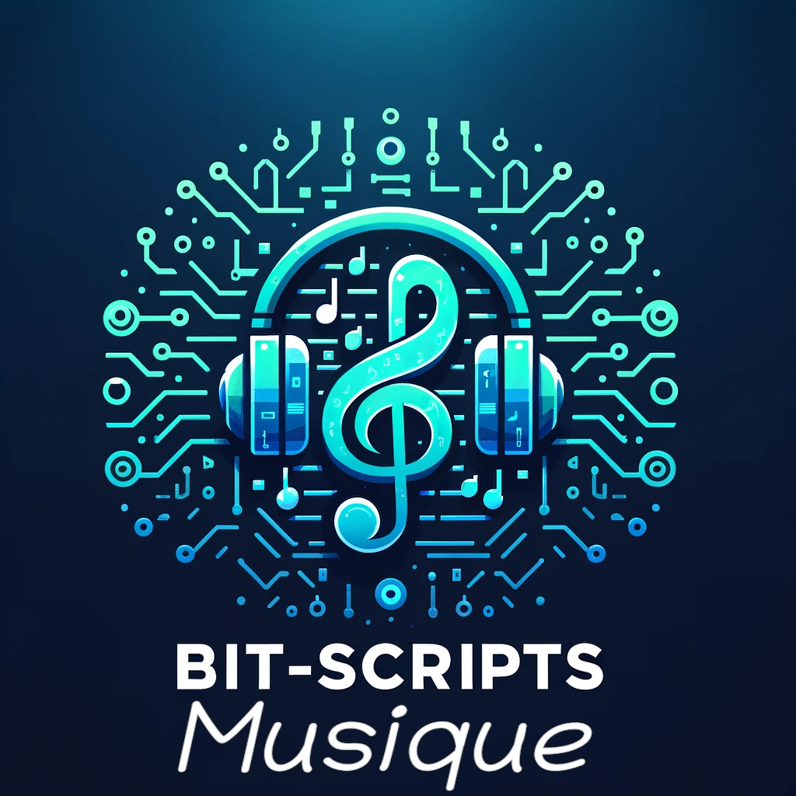

Marv
A discord bot in NodeJS that uses chatGPT and a speech synthesis and recognition system to interact with the bot through voice.
Bit-Scripts
A discord bot in NodeJS that uses chatGPT and a speech synthesis and recognition system to interact with the bot through voice.

A Python project that turns your camera into green Ascii Art, a bit like in Matrix.

A Python project with an interface to Kivy, the application allows you to know in a certain radius of action around an address, the cheapest fuel of your choice.

A website that takes the concept of Marv but directly on the Web to make it accessible to everyone.

The Matrix Python project, which transforms your camera into green Ascii Art, a bit like in The Matrix, entirely redone in C++ (for Linux only).

Snake Game has players directing a snake to eat apples. Generated with OpenAI's ChatGPT via the Discord's Bot Marv, it offers an upgraded yet classic experience.

BitGuardian is a Discord moderation bot that assigns a role to new members and logs user messages. Facilitating server management, it improves user experience and provides extensible support for custom features.

Rsscript is an open source Discord bot project that aims to read RSS feeds and transmit them to a specific Discord channel.

BIT-SCRIPTS' Musique is a user-friendly audio player supporting MP3, WAVE, OGG, and FLAC formats. Efficient and straightforward, it's perfect for managing and enjoying your music collection. Developed in Python, Musique offers a blend of performance and simplicity for music lovers.